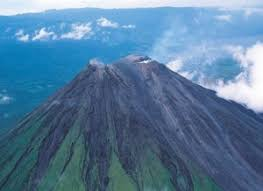
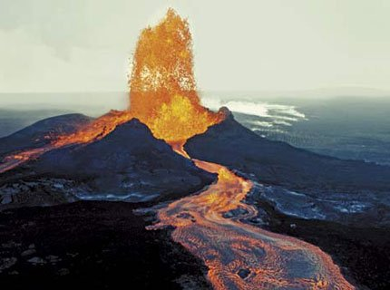

Tipos de Volcanes |
|
| Volcanes según su forma | Según su tipo de erupción |
| En escudo Se forman en lugares donde la lava es expulsada de forma fluida. Su base es muy amplia con pendiente suave, resultado de diferentes coladas y magazas poco viscosas. Estratovolcanes Son volcanes que alternan erupciones explosivas y erupciones tranquilas. Tiene coladas de lava con gran pendiente. Calderas volcánicas Son grandes depresiones volcánicas de entre 5 y 15 km de diámetro que se forman por una explosión o hundimiento de la cámara magmática o por erosión. Conos basálticos Los conos basálticos son bastante raros de ver. Son muy bajos debido a la gran fluidez de la lava basáltica. Conos de ceniza Se forman en lugares donde las erupciones son de tipo explosivo con abundancia de materiales piroclásticos (cenizas, etc.). Maar Son depresiones volcánicas pequeñas (diámetro no mayor de 1 km) que se forman en una erupción hidromagmática, es decir una erupción que se produce entre una masa magmática y el agua en proporciones iguales. |
Hawaiano |
|  |  |